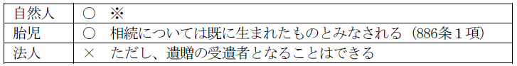

第９編 相 続
第１章 総説
甲に子Ａ・Ｂがいるとすると（配偶者はいないものとする。）、甲が死亡すれば、甲の財産上の権利義務はＡ及びＢに承継される。これを相続といい、この事例における甲を被相続人、Ａ及びＢを相続人という。甲が死亡する以前には、Ａ及びＢは甲を相続すべき期待権を有しているので、推定相続人と呼ばれる。
上記事例で、Ａ及びＢが承継する財産を相続財産という。この相続財産には、積極財産（権利）だけでなく消極財産（義務）も含まれるが、被相続人の一身に専属するものは含まれない（896条ただし書）。
相続は、死亡によって開始される（882条）。これが唯一の相続の効力発生原因である。「死亡」には、失踪宣告により死亡したものとみなされる場合も含まれる（31条）。なお、同時死亡の推定がある場合、両者の間で相続は開始しない。
また、相続は、被相続人の住所において開始する（883条）。
第２章 相続人
1. 相続人となり得る者

※ 個々の場合に具体的に相続できるためには、一定の範囲に属し第一次的順位にあって、相続欠格者又は廃除されていない者であることを要する。
2. 同時存在の原則
同時存在の原則とは、被相続人が死亡した時に、相続人は共存していなければならないという原則をいう。すなわち被相続人より前に死亡すれば、相続することができないことになる。相続は、被相続人の死亡と同時に開始し、被相続人に属した一切の財産上の権利義務が直ちに相続人に移転するからである。
3. 胎児の出生擬制
胎児は相続については、既に生まれたものとみなされる（886条１項）。
1. 相続人の種類と順位
相続人には、血族相続人と配偶者である相続人とがある。
血族相続人には、第１順位に子とその代襲相続人（887条１項、２項）、第２順位に直系尊属（889条１項１号）、第３順位に兄弟姉妹とその代襲相続人（889条１項２号、２項、887条２項）という順位がある。このうち、相続開始時に生存する最優先順位の血族相続人のみが現実に相続することになる。
配偶者はこれらの血族相続人と並んで常に相続人となる（890条）。
2. 子
子は第１順位の血族相続人である（887条１項）。孫以下の直系卑属は子を代襲する場合にのみ相続人となる（887条２項、３項）。
子が数人ある場合には、同順位で相続人となる（900条４号本文）。嫡出子と非嫡出子が共同相続する場合であっても、非嫡出子の法定相続分は嫡出子と同等である（最大決平25.9.4）。
3. 直系尊属
直系尊属は第２順位の血族相続人である（889条１項１号）。直系尊属の中では親等の近い者が優先する（889条１項１号ただし書）。親等の同じ直系尊属が数人ある場合は、共同相続人となる（900条４号本文）。
4. 兄弟姉妹
兄弟姉妹は第３順位の血族相続人である（889条１項２号）。
兄弟姉妹が複数ある場合には、すべて同順位で共同相続人となる（900条４号本文）。ただし、父母の一方のみを同じくする兄弟姉妹（半血兄弟姉妹）の法定相続分は、父母の双方を同じくする兄弟姉妹（全血兄弟姉妹）の法定相続分の２分の1である（900条４号ただし書）。
5. 配偶者
配偶者は常に相続人となる。血族相続人がある場合には、それらの者と共同相続人になる（890条）。
配偶者は法律上の配偶者であり内縁を含まない。また配偶者には代襲相続は認められない。
1. 意義
甲に子Ａ・Ｂがある場合（配偶者はいないものとする。）、Ａが甲より先に死亡すると、甲の相続人はＢだけとなるのが原則である。しかし、甲の相続開始時にＡの子Ｃがいるとした場合には、仮にＡが甲の相続開始時に生存していた場合と比べて不公正が生じてしまう。そこで、かかる不公平を是正するために、政策的にＣがＡに代わって甲を相続できるとしたのが、代襲相続の制度である。
2. 要件
(1) 被代襲者についての要件
(a) 被代襲者は、被相続人の子及び兄弟姉妹である（887条２項、889条２項）。
(b) 代襲原因は、相続開始以前の死亡、相続欠格及び廃除の３つに限られる（887条２項）。
※ 相続放棄は代襲原因とならない。
(2) 代襲者についての要件
(a) 代襲者は、被代襲者の直系卑属に限られる（887条２項、３項、889条２項参照）。
(b) 被相続人の子の子が代襲者になる場合には、その者は被相続人の直系卑属でなければならない（887条２項ただし書）。
従って、被相続人の子が養子であり、その養子に縁組前の子がある場合であっても、当該縁組前の子には代襲相続権はない。
(c) 代襲者は、相続開始前に直系卑属として存在している必要がある。
(d) 代襲者は、被相続人から廃除された者・欠格者でないことが必要である。これは、代襲相続人は被相続人を相続する者であるからである。
3. 再代襲相続
被相続人の子に代襲原因が発生すれば孫が代襲相続人となるが、この孫についても代襲原因が発生すれば、孫の子（被相続人の曾孫）が代襲相続人となる（887条３項）。このように、再代襲も認められている。もっとも、兄弟姉妹については、再代襲は認められていない（889条２項は887条３項を準用していない）。
4. 効果
代襲相続があると、代襲者が被代襲者の相続順位に上がって、被代襲者の相続分を受けることになる。数人の代襲相続人相互間の相続分は、原則として平等である（901条、900条４号）。
1. 相続欠格
(1) 意義
欠格事由に該当する者は、相続人としての資格が当然に剥奪されることになる。
(2) 民法が定める欠格事由は以下のようなものである（891条各号）。
(a) 故意に被相続人又は先順位・同順位の者を死亡するに至らせ、又は至らせようとしたために刑に処せられた者（１号）
故意犯の場合に限られるが、未遂・予備犯は含まれる。過失致死・傷害致死は含まない。
(b) 被相続人が殺害されたことを知りながら告訴・告発しなかった者（２号）
その者に是非弁別がないときや、殺害者が自己の配偶者又は直系血族であったときは除外される。
(c) 詐欺又は強迫によって被相続人の遺言の作成・撤回・取消し・変更を妨げた者（３号）
(d) 詐欺又は強迫により被相続人に相続に関する遺言をさせ、撤回させ、取り消させ、又は変更をさせた者（４号）
(e) 相続に関する被相続人の遺言書を偽造・変造・破棄・隠匿した者（５号）
※ ただし、相続人の破棄・隠匿行為が相続に関して不当な利益を目的としなかったときは、遺言に関し著しく不当な干渉行為をした相続人に対して相続人となる資格を失わせることで民事上の制裁を課すという本号の趣旨に沿わず、相続欠格者には当たらない（最判平９.１.28）。
(3) 効果
相続欠格事由があると、相続人となることができない（891条）。相続欠格者は同時に受遺者となることもできない（965条、891条）。欠格事由がある場合は、特別な手続を要せずに、法律上当然に効果が生じる。相続開始前に欠格事由がある場合は即時に、相続開始後に欠格事由が生じた場合には相続開始時にさかのぼって効果が生じる。
欠格の効果は相対的であり、特定の被相続人に対する関係で相続人資格を剥奪されるにすぎない。
2. 廃除
(1) 意義
被相続人が遺留分を有する推定相続人に相続させることを欲しない場合に、その推定相続人の相続権を剥奪することができる制度である。
(2) 要件
①廃除される者が遺留分を有する推定相続人であること（892条）
遺留分を有しない兄弟姉妹、適法に遺留分を放棄した相続人は廃除の対象とならない。これらの者に相続させたくなければ、相続分をゼロと指定すれば足りるからである（902条１項）。
②廃除原因があること
廃除原因には、(a)被相続人に対する虐待又は重大な侮辱と、(b)その他の著しい非行とがある（892条）。
廃除事由の有無は、一切の事情を考慮して、家庭裁判所が決定する。
③家庭裁判所に廃除の請求があること
生前廃除の場合は、被相続人が自ら請求する（892条）。遺言廃除の場合は、遺言執行者がその職務として遅滞なく請求する（893条）。廃除請求権は被相続人に一身専属的なものである。
④廃除の審判又は調停があること
(3) 効果
廃除の審判の確定又は調停の成立により、被廃除者は相続権を失う。相続開始前に審判の確定又は調停の成立があった場合には即時に、相続開始後に審判の確定又は調停の成立があった場合には相続開始時にさかのぼって効果が生ずる（893条）。
廃除の効果は相対的であって廃除者たる被相続人との関係でのみ相続権を奪われる。
(4) 廃除の取消し
廃除の制度は、被相続人の意思を尊重しようとするものであるから、被相続人がその取消しをしようと思えば、いつでも、家庭裁判所に廃除の取消しを請求することができる（894条１項）。廃除の取消しは遺言ですることもできる（894条２項、893条）。廃除が取り消されれば、相続開始後に取り消された場合であっても、廃除の効果はさかのぼって消滅するから、被廃除者は相続人の地位を回復する（894条２項、893条）。
また、廃除は受遺者となることまでも否定するものではないから、たとえ廃除が取り消されなくても、被相続人は被廃除者に生前贈与のみならず、遺贈をすることもできる。